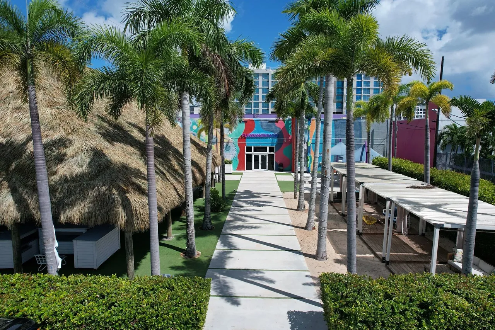
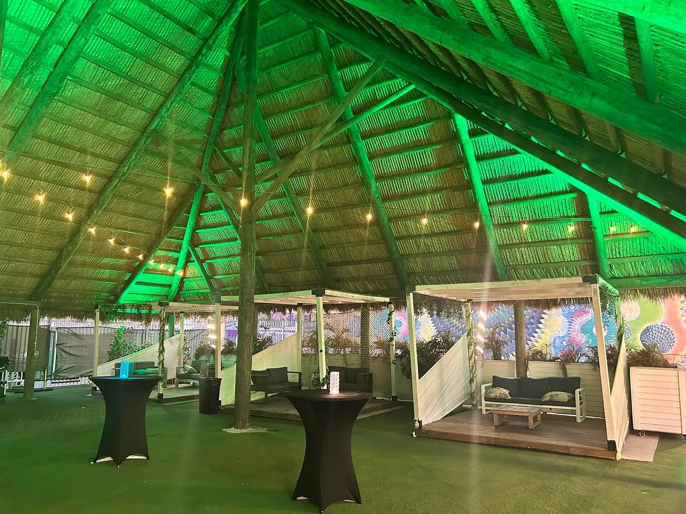

Jardín abierto.
Techo cuando
hace falta.Open garden.
A roof when
you need one.
Cerca de 22 000 ft² de exterior en el Wynwood Arts District, con una palapa de ~4 000 ft² que cubre el evento si llueve. Tú traes la producción; nosotros entregamos el espacio.Roughly 22 000 sq ft of outdoor space in the Wynwood Arts District, with a ~4 000 sq ft thatched structure that covers the event if it rains. You bring the production; we hand over the space.
Solicitar disponibilidadRequest availability →
La sección es lo que un productor necesita para decidir rigging, altura de estructura y cobertura de lluvia. Las alturas salen del esquema volumétrico: se miden en la visita.The section is what a producer needs to judge rigging, structure height and rain cover. Heights come from the volumetric scheme: they are measured at the visit.
El predio es interior de manzana con frente a NW 1st Ct. El trazado de calles y las referencias del barrio son reales; las distancias y los tiempos son aproximados. El ancho de portón para carga se confirma en la visita.The site sits within the block, fronting NW 1st Ct. The street grid and the neighbourhood references are real; distances and times are approximate. Gate width for load-in is confirmed at the site visit.
La planta es la lámina de montaje: muestra qué parte del recinto está cubierta, dónde caen los postes y por dónde corre el paseo. Las dimensiones se derivan de las superficies aproximadas del propietario.The plan is the build sheet: it shows which part of the site is covered, where the posts land and where the walk runs. Dimensions derive from the owner's approximate areas.
Esquema volumétrico aproximado — no es un plano a escala. No existe plano CAD del propietario: las cotas, el aforo por montaje y la ficha de infraestructura se levantan en la visita y quedan documentados.Approximate volumetric diagram — not to scale. The owner has no CAD drawing: dimensions, capacity per layout and the infrastructure sheet are surveyed and documented during the site visit.
Llegas con tu montaje. El espacio ya está.You bring the build. The space is ready.
Club Wynwood es un venue al aire libre en 2129 NW 1st Ct, a una cuadra de los murales del Wynwood Arts District. Dos espacios conectados —el Jardín y el Tiki Hut techado— que se alquilan por separado o juntos.Club Wynwood is an open-air venue at 2129 NW 1st Ct, one block from the Wynwood Arts District murals. Two connected spaces —the Garden and the covered Tiki Hut— available separately or together.
Producción, catering, sonido, iluminación y mobiliario adicional los trae tu equipo. Ese encuadre no es una carencia: es lo que permite que una productora sepa exactamente qué recibe el día del montaje.Production, catering, sound, lighting and extra furniture come from your team. That framing isn't a shortfall: it's what lets a production company know exactly what it gets on load-in day.
Espacio, no paqueteSpace, not a package
Se alquila el jardín y la estructura techada. Cero ambigüedad sobre qué está incluido.You rent the garden and the covered structure. Zero ambiguity about what's included.
Techo realA real roof
~4 000 ft² de palapa de paja. En Miami eso significa que tu fecha deja de depender de la lluvia.~4 000 sq ft of thatched structure. In Miami that means your date stops depending on the rain.
Wynwood Arts District
2129 NW 1st Ct. El barrio de Art Basel como contexto real del evento, no como referencia.2129 NW 1st Ct. The Art Basel district as the event's real context, not a marketing line.
Números verificadosVerified numbers
Cada superficie y cada aforo de esta página sale del propietario y está marcado como tal. Abajo, la ficha completa.Every area and capacity on this page comes from the owner and is marked as such. The full sheet is below.
El JardínThe Garden
Paseo pavimentado central, franjas de césped artificial a ambos lados, dos hileras de palmeras reales, ocho cabañas amuebladas, mesas de picnic fijas y setos perimetrales. La superficie mayor y la que admite montaje libre.A central paved walk, artificial turf strips on both sides, two rows of real palms, eight furnished cabanas, fixed picnic tables and perimeter hedges. The larger surface, and the one that takes an open build.
El Tiki Hut
Palapa larga y paralela al paseo, techo de paja a cuatro aguas sobre dos hileras de postes de madera, abierta por los cuatro costados. Es el plan anti-lluvia y la zona de sombra permanente.A long structure parallel to the walk: a four-hipped thatched roof on two rows of timber posts, open on all four sides. It's the rain plan and the permanent shade zone.
Jardín + Tiki Hut en un solo recintoGarden + Tiki Hut as a single site
Los dos espacios son contiguos y comparten el paseo: la palapa funciona como zona cubierta de un recinto continuo, no como sala aparte.The two spaces are contiguous and share the walk: the structure works as the covered zone of one continuous site, not as a separate room.
Ver en Lámina 03 — ContextoSee on Plate 03 — Context →

Los números, y de dónde salen.The numbers, and where they come from.
Un productor decide con números, no con adjetivos. Estas son las superficies y aforos del inmueble. La ficha de infraestructura se levanta contigo en la visita técnica y te la entregamos por escrito.A producer decides with numbers, not adjectives. These are the venue’s areas and capacities. The infrastructure sheet is surveyed with you at the technical visit and delivered in writing.
Reserva tu fecha.Book your date.
Cuéntanos qué evento tienes y respondemos con disponibilidad, condiciones y la ficha técnica completa.Tell us about your event and we'll come back with availability, terms and the full spec sheet.
Cuéntanos tu evento.Tell us about your event.
Con el tipo de evento, la fecha y el número de invitados respondemos con disponibilidad real y condiciones. Si necesitas ver el espacio, coordinamos la visita y levantamos la ficha técnica contigo.With the event type, date and guest count we can come back with real availability and terms. If you need to see the space, we schedule the visit and survey the spec sheet with you.